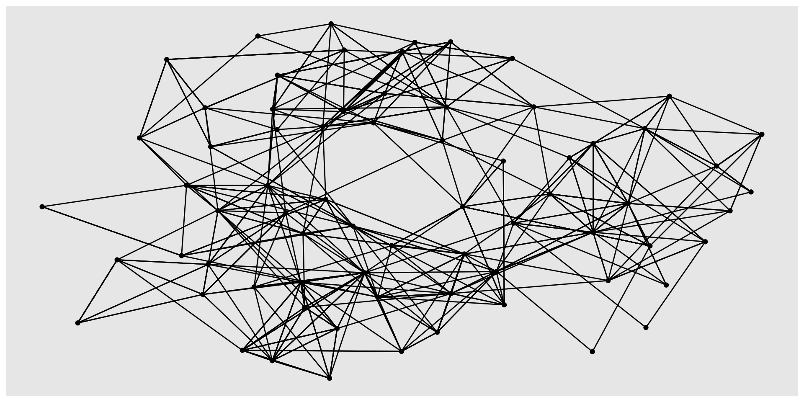
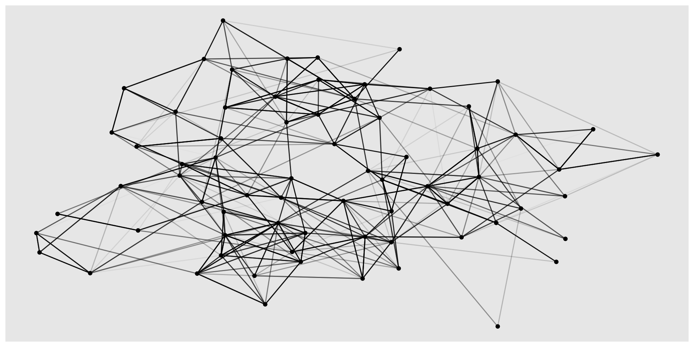
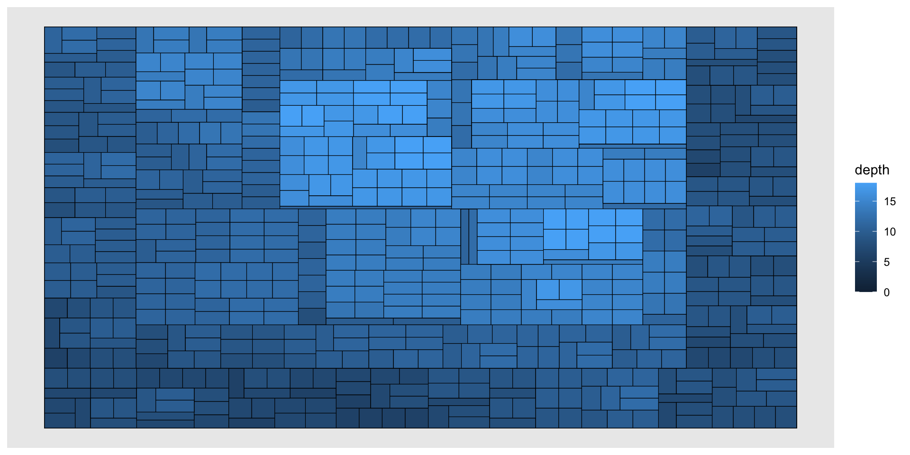
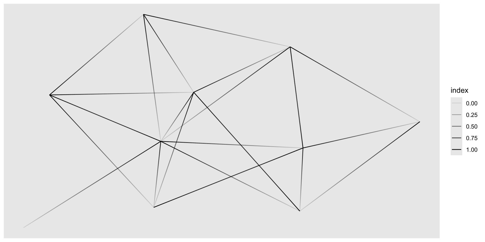
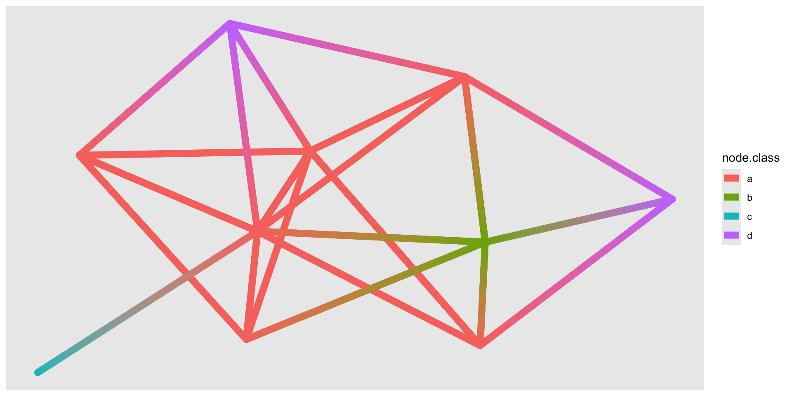
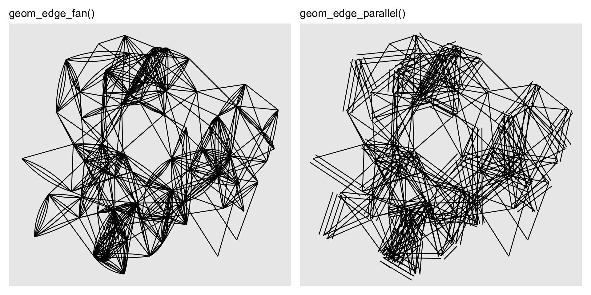
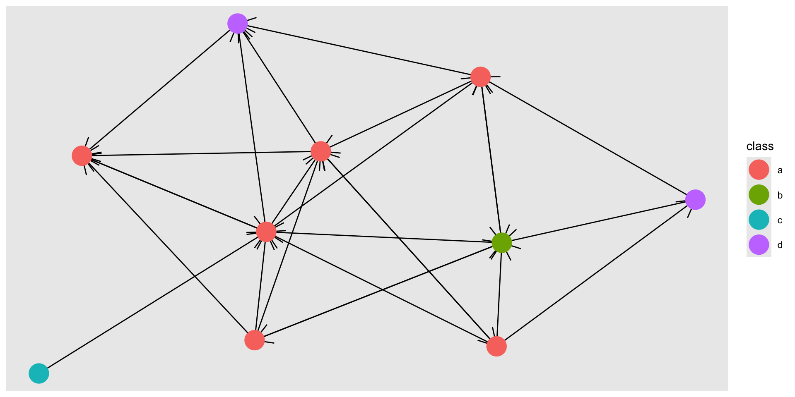
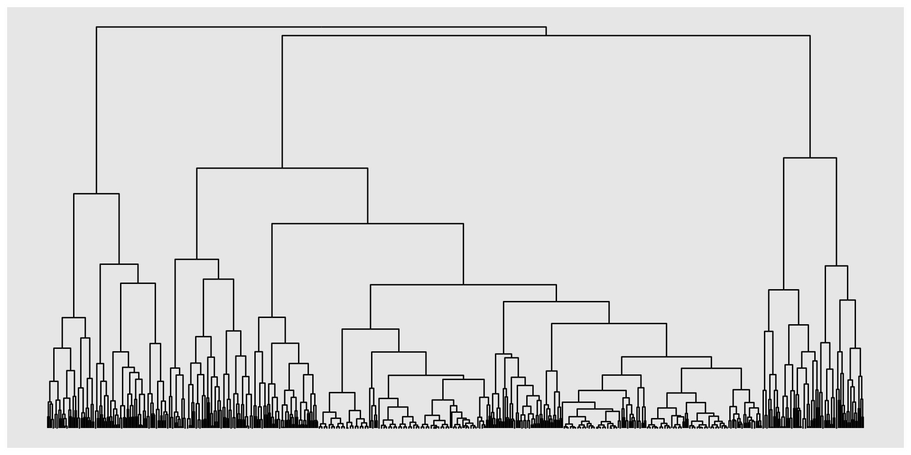
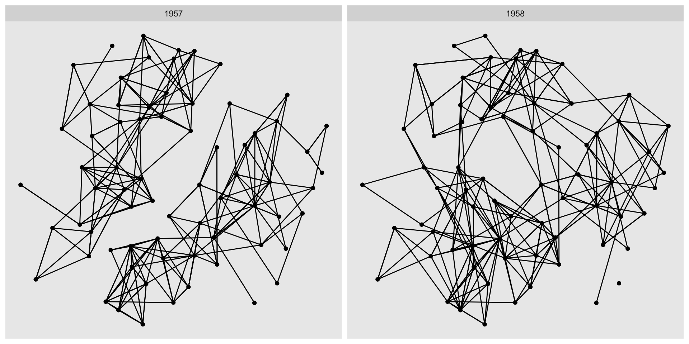
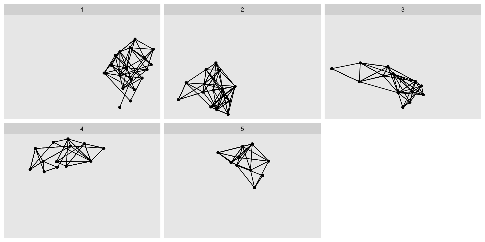

# A tbl_graph: 10 nodes and 26 edges
#
# A directed simple graph with 1 component
#
# Edge Data: 26 × 2 (active)
from to
<int> <int>
1 3 1
2 6 1
3 9 1
4 3 2
5 1 3
6 8 3
7 9 3
8 2 5
9 3 5
10 6 5
# ℹ 16 more rows
#
# Node Data: 10 × 1
class
<chr>
1 a
2 a
3 a
# ℹ 7 more rowsData Analysis
Chapter 7: Networks
Yu-You Liou (NTU)
Shih Chien University
2026-06-05
Networks
Networks
Like maps, network data occupies a specialised corner of the data visualisation landscape. While spatial data primarily requires handling map projections, network data introduces an entirely distinct data structure and an entirely distinct family of visual idioms.
ggplot2 does not natively support network visualisation. This chapter demonstrates how to use the ggraph package (https://ggraph.data-imaginist.com) — the most comprehensive and ggplot2-compatible solution available. Other packages offering related functionality include:
geomnet,ggnetwork, andGGally— for general network plots.ggtreeandggdendro— specifically for tree and dendrogram visualisation.
Chapter roadmap
- Section 7.1 — the structure of network data and the
tidygraphmanipulation API. - Section 7.2 — visualising networks with
ggraph: layouts, node geoms, edge geoms, and faceting. - Section 7.3 — pointers to further resources.
What is network data?
What is network data?
In mathematical terms, a graph (or network) is a data structure composed of two elements:
- Nodes (also called vertices) — the entities being modelled (people, genes, web pages, …).
- Edges (also called links) — the relationships connecting pairs of nodes (friendship, co-expression, hyperlinks, …).
Both nodes and edges may carry additional attributes. Edges may additionally be classified as:
- Directed — the relationship has a defined source and target (e.g., “child-of” is not symmetric).
- Undirected — the relationship is symmetric (e.g., mutual friendship).
Why network data is challenging for ggplot2
Network data cannot be naturally represented as a single rectangular data frame, which is the fundamental assumption underlying ggplot2. It requires at minimum two interrelated tables — one for nodes and one for edges. The tidygraph package addresses this by providing a dual-table structure together with a dplyr-compatible API. ggraph builds on tidygraph to deliver a complete grammar of graphics for networks.
A tidy network manipulation API
tidygraph is best understood as a dplyr interface for network data. It exposes the same verbs (mutate(), filter(), arrange(), etc.) that analysts already know, but applies them to either the node table or the edge table of a graph.
The example below constructs a random directed graph using the Erdős–Rényi sampling model (play_gnp()), assigns a random categorical label to each node, and sorts the edges by the label of their source node:
Key functions introduced
activate(nodes)/activate(edges)— switches the “active” context so that subsequent dplyr verbs operate on the node table or the edge table respectively. Only one table can be active at a time..N()— within an edge-contextmutate()orfilter(),.N()gives read access to the node data frame of the current graph. This allows edge attributes to reference node attributes (e.g., sorting edges by a property of their source node)..E()— gives read access to the edge data frame when working in a node context..G()— gives access to the entire graph object.
Conversion
Network data arrives in many formats. tidygraph provides as_tbl_graph() to convert the most common R network objects into the unified tbl_graph format.
Converting an edge-list data frame:
The highschool dataset from ggraph records friendship nominations among high-school boys in two academic years (1957 and 1958), stored as a three-column edge list:
Converting a hierarchical clustering result:
as_tbl_graph() also handles the output of hclust(), automatically extracting node-level attributes such as label, leaf status, and linkage height:
# A tbl_graph: 1313 nodes and 1312 edges
#
# A rooted tree
#
# Node Data: 1,313 × 4 (active)
height leaf label members
<dbl> <lgl> <chr> <int>
1 0 TRUE "101" 1
2 0 TRUE "427" 1
3 778. FALSE "" 2
4 0 TRUE "571" 1
5 0 TRUE "426" 1
6 0 TRUE "424" 1
7 0 TRUE "425" 1
8 0 FALSE "" 2
9 590. FALSE "" 3
10 1652. FALSE "" 4
# ℹ 1,303 more rows
#
# Edge Data: 1,312 × 2
from to
<int> <int>
1 3 1
2 3 2
3 8 6
# ℹ 1,309 more rowsWhen converting, tidygraph preserves any additional columns present in the input data (e.g., the year column from highschool, and the label and leaf columns from the clustering result) and attaches them as node or edge attributes automatically.
Algorithms
One of tidygraph’s most powerful features is its integrated library of graph algorithms. These include:
- Centrality — measures of node importance (e.g., degree, betweenness, PageRank, eigenvector).
- Ranking — orderings that place well-connected nodes near one another.
- Grouping / community detection — partitioning nodes into clusters based on edge density.
All algorithm functions are designed to be called inside mutate(). They return a vector whose length and ordering match the active node or edge table, and they infer the graph context implicitly — no need to pass the graph or node indices as arguments.
Example: PageRank centrality
The code below adds a centrality column to the node table of graph, computed using the PageRank algorithm, and sorts nodes in descending order of centrality:
# A tbl_graph: 10 nodes and 26 edges
#
# A directed simple graph with 1 component
#
# Node Data: 10 × 2 (active)
class centrality
<chr> <dbl>
1 a 0.249
2 a 0.217
3 d 0.128
4 a 0.114
5 a 0.0988
6 b 0.0711
7 a 0.0472
8 a 0.0352
9 d 0.0250
10 c 0.015
#
# Edge Data: 26 × 2
from to
<int> <int>
1 1 2
2 4 2
3 8 2
# ℹ 23 more rowsBecause algorithms are evaluated lazily inside mutate(), they can also be invoked directly inside aes() calls in ggraph — enabling on-the-fly computation during plotting without modifying the underlying graph object.
Further resources for tidygraph
This section provides only a brief orientation to tidygraph. A comprehensive overview of all available functions and algorithms is available at https://tidygraph.data-imaginist.com.
Visualizing networks
Visualizing networks
ggraph extends the grammar of graphics to network data by sitting on top of both tidygraph and ggplot2. While its API is deliberately familiar, it differs from standard ggplot2 usage in one important respect: most network visualisations do not map variables directly to x and y aesthetics.
Instead, node positions are determined by a layout algorithm that uses the graph’s topology to assign (often mathematically arbitrary) x and y coordinates. The positions communicate structural relationships — connectivity, hierarchy, clustering — rather than the values of any measured variable.
Setting up the visualization
A ggraph plot is initialised with ggraph() rather than ggplot(). The function signature is:
graph— atbl_graph, or any object thatas_tbl_graph()can convert.layout— either a string naming a built-in layout, or a custom function that accepts atbl_graphand returns a data frame with at leastxandycolumns (one row per node)....— additional arguments forwarded to the layout function.
If layout is omitted, ggraph selects a sensible default based on the graph type.
Specifying a layout
The three examples below illustrate: (1) using the default layout, (2) specifying a named layout explicitly, and (3) passing edge weights as a layout argument:



A caution on layout choice
Network layouts are well-known for their ability to create the visual impression of structure — clusters, hierarchies, or dense hubs — that may not reflect true patterns in the data. The same graph can look dramatically different under different layouts. Always explore multiple layouts before settling on one for publication, and be sceptical of apparent patterns that only appear in a single layout.
Circularity
Some layouts support a circular = TRUE argument that arranges nodes in a ring rather than a flat plane. The correct way to achieve this in ggraph is via the layout parameter, not via coord_polar(). Using coord_polar() bends the edges as well as repositioning the nodes, which is almost never desirable:
library(patchwork)
p1 <- ggraph(luv_graph, layout = "dendrogram", circular = TRUE) +
geom_edge_link() +
coord_fixed() +
ggtitle("circular = TRUE (correct)")
p2 <- ggraph(luv_graph, layout = "dendrogram") +
geom_edge_link() +
coord_polar() +
scale_y_reverse() +
ggtitle("coord_polar() (edges bent — avoid)")
p1 | p2
Drawing nodes
All node-drawing geoms in ggraph share the geom_node_ prefix. The workhorse is geom_node_point(), which renders each node as a point — conceptually similar to geom_point(), but with three important differences shared by all node and edge geoms:
xandyare implicit — node positions are set by the layout and do not need to be specified inaes().filteraesthetic — a logical aesthetic that suppresses the drawing of specific nodes when set toFALSE, without removing them from the graph structure used by edges.- In-
aes()algorithm calls — anytidygraphalgorithm can be called directly insideaes(), and it will be evaluated on the graph being visualised. This enables rapid iteration without modifying the underlying data.
Example: filtering and colouring nodes by centrality
The plot below renders the hs_graph, showing only nodes with more than 2 connections (filtered using centrality_degree()), and colours visible nodes by their power centrality:

Specialised node geoms
Beyond geom_node_point(), ggraph provides layout-specific node geoms. For example, geom_node_tile() is used when the chosen layout is "treemap" — in this context, each node is rendered as a rectangular tile whose area is proportional to its weight in the hierarchy:

Drawing edges
Edge geoms share the geom_edge_ prefix and offer considerably more variety than node geoms, reflecting the many ways in which a connection between two entities can be rendered.
Three variants of every edge geom
Every edge geom type in ggraph exists in three variants, distinguished by a numeric suffix:
| Variant | Suffix | Behaviour |
|---|---|---|
| Standard | (none) | Splits each edge into sub-segments; supports gradients along the edge |
| Simple | 0 |
Draws the edge as a single primitive; faster but no gradient support |
| Interpolated | 2 |
Interpolates between values at the two endpoints; accesses terminal node attributes via node. prefix |
geom_edge_link() — straight-line edges
geom_edge_link() is the most commonly used edge geom. In its standard form, the edge is subdivided internally, enabling a gradient along its length. Mapping after_stat(index) to alpha produces a directional fade from source (transparent) to target (opaque):

geom_edge_link2() — interpolating node attributes
The 2 variant allows the edge colour (or other aesthetic) to be interpolated between the values of an attribute at the two terminal nodes. Node attributes are accessed inside aes() with the node. prefix:

The node1. and node2. prefixes (available in the standard and 0 variants) give access to the source and target node attributes separately, while node. (used in the 2 variant) refers generically to the current endpoint being interpolated.
Handling parallel edges
When multiple edges connect the same pair of nodes (a multigraph), drawing them as straight lines stacks them on top of one another and hides the multiplicity. Two geoms address this:
geom_edge_fan()— spreads parallel edges into arcs that fan out between the two nodes.geom_edge_parallel()— offsets parallel edges as parallel straight lines.

Both geoms increase visual clutter and are best reserved for relatively small graphs.
Tree and dendrogram edges
For hierarchical layouts such as dendrograms, the conventional visual style uses right-angle connectors rather than straight diagonal lines. geom_edge_elbow() provides this:

Smoother alternatives that produce curved connectors are geom_edge_bend() and geom_edge_diagonal().
Clipping edges around nodes
When directional arrows are added to edges, a common problem arises: the arrowhead is hidden beneath the node point because the edge is drawn all the way to the node’s geometric centre. The start_cap and end_cap aesthetics solve this by defining a clipping region around each terminal node — the edge is terminated before it enters the clipping zone.
Without clipping (arrowhead obscured):

With clipping (arrowhead visible):

circle(5, "mm") defines a circular clipping region of 5 mm radius centred on each terminal node. The circle() helper function is provided by ggraph; other geometry helpers (e.g., square(), ellipsis()) are also available.
Edges as non-line objects
Edges do not have to be rendered as lines. In a matrix plot (also called an adjacency matrix plot), nodes are placed implicitly along both axes, and edges are shown as tiles or points at their row–column intersection. geom_edge_point() implements this for the matrix layout:

Matrix plots scale to much larger graphs than node–link diagrams and are particularly effective for revealing block-diagonal structure in ordered adjacency matrices.
Faceting
Faceting is conceptually as valuable for networks as it is for tabular data — and for much the same reasons: it enables direct visual comparison of the same structure across subsets. However, standard facet_wrap() and facet_grid() cannot be used directly with ggraph because they do not understand the dependency between node and edge tables.
ggraph provides three specialised faceting functions:
facet_edges(~ var)— splits edges into panels by a variable in the edge table; nodes are repeated in all panels.facet_nodes(~ var)— splits nodes into panels by a variable in the node table; edges whose endpoints are in different panels are dropped.facet_graph(row_var ~ col_var, rows = "edges"/"nodes", cols = "edges"/"nodes")— a two-dimensional equivalent offacet_grid()that allows independent specification of which table drives the rows and which drives the columns.
facet_edges() example: friendship evolution over time
The highschool data records friendships in two separate years. Using facet_edges(~year) splits the edge table by year while repeating all 70 nodes in each panel, making the structural evolution directly comparable:

The faceted view makes it immediately apparent that the network transitions from two near-completely disconnected groups in 1957 to a more integrated, single-component structure in 1958.
facet_nodes() example: community detection
Because faceting accepts tidygraph algorithm calls directly, it is straightforward to visualise the result of a community detection algorithm without pre-computing and storing the partition:

group_spinglass() partitions the nodes using the spin-glass community detection algorithm. Each panel displays the subgraph induced by one detected community; edges between communities are dropped. The result allows immediate assessment of whether the detected communities are genuinely well-separated.
Want more?
Want more?
This chapter provides a practical introduction to network visualisation with ggraph and tidygraph. Many additional capabilities — including more layout algorithms, further edge and node geom types, legend handling for edges, and custom scale functions — are documented in the respective package websites:
- tidygraph documentation and vignettes: https://tidygraph.data-imaginist.com
- ggraph documentation and getting-started guides:
Understanding tidygraph deeply — particularly the activate() model and algorithm API — is the single most effective way to improve command of ggraph, since every visualisation decision ultimately rests on how the underlying graph data is structured and queried.
Acknowledgement
Copyright notice. These teaching materials have been adapted from ggplot2: Elegant Graphics for Data Analysis (3e). All rights are reserved by the original authors and publishers.
Non-commercial use only. These materials are strictly intended for educational purposes and must not be used for commercial gain or profit.
Proper attribution. Any reproduction, distribution, or use of these materials must provide proper attribution to the original source.
References

ggplot2: Elegant Graphics for Data Analysis